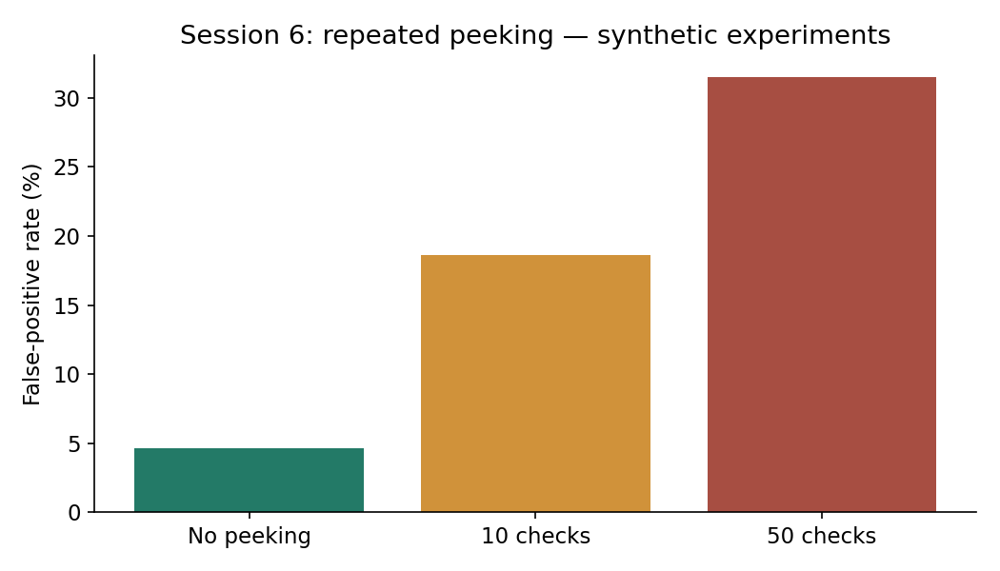

Research Methods · Dr. Loveleen Gaur · Public statistical simulations
Read-only view of the executed English notebook. This is an automated capture of genuine saved outputs; it does not assert manual student execution.peek50=float(np.mean([run_experiment(True,checks=50,seed=s) for s in range(2000)])*100)
print('False-positive percentages, 10 versus 50 checks:',peek10,peek50)
False-positive percentages, 10 versus 50 checks: 18.6 31.5

Notebook SHA256: a83dd1dde81ad385fb0aaa7eda95a0d70e56b94aee0f50bc015ff664944250c0